Chapter 21 Descriptive Statistics
Descriptive statistics are used to describe the characteristics of a sample drawn from a population; often, when dealing with data about human beings in organizations, it’s not feasible to attain data for the entire population, so instead we settle for what is hopefully a representative sample of individuals from the focal population. Common types of descriptive statistics include counts (i.e., frequencies), measures of central tendency (e.g., mean, median, mode), and measures of dispersion (e.g., variance, standard deviation, interquartile range). When we analyze employee demographic data, for example, we often compute descriptive statistics like the number of employees who identify with each race/ethnicity category or the average employee age and standard deviation. It’s important to remember that descriptive statistics are, well, descriptive. That is, they help us summarize characteristics of a sample, which is why they are sometimes referred to as summary statistics. As discussed in the chapter on the Data Analysis phase of the HR Analytics Project Life Cycle, descriptive statistics are a specific type of descriptive analytics, as they summarize data that were collected in the past.
21.0.0.1 Measurement Scales
When determining what type of descriptive statistics is appropriate for summarizing data contained within a particular variable, it is important to determine the measurement scale of the variable. Measurement scale (i.e., scale of measurement, level of measurement) refers to the type of information contained within a vector of data (e.g., variable), and the four measurement scales are: nominal, ordinal, interval, and ratio.
Nominal measurement scale. Variables with a nominal measurement scale have different category labels, which are sometimes referred to as levels. The category labels, however, do not have any inherent numeric properties. As an example, let’s operationalize gender identity as having a nominal measurement scale, such that gender identity includes the following category labels: agender, man, nonbinary, trans man, trans woman, and woman. These category labels do not have any inherent numeric values, and although we could assign numeric values to the gender identity category labels (e.g., agender = 1, man = 2, nonbinary = 3, etc.), doing so wouldn’t imply that one category label has a higher value than another. Variables with a nominal measurement scale are sometimes referred to as categorical variables.
The Facility and Gender variables (i.e., columns) contain examples of nominal measurement scales, as each variable has category labels that lack any inherent numeric values and cannot be ordered in a meaningful way.
Ordinal measurement scale. Like variables with a nominal measurement scale, variables with an ordinal measurement scale are a specific type of categorical variable; however, unlike nominal variables, the category labels (i.e., levels) associated with ordinal variables can be ordered or ranked. It should be noted that the gaps – or intervals – between categorical labels of an ordinal variable are unknown. For example, let’s operationalize employee education levels with the following ordered category labels: high school diploma, some college, and college degree. That is, completing some portion of a college degree is a higher level of education than earning a high school diploma, and completing a college degree is a higher level of education than completing some portion of a college degree. We don’t know, though, the size of the interval between earning a high school diploma and completing some college, and between some completing some college and earning a college degree; thus, as operationalized in this example, employee education level demonstrates an ordinal measurement scale (as opposed to an interval measurement scale, which is described in the following section).
A classic example of an ordinal measurement scale is any type of Likert (or Likert-type) scale or response format. Examples of Likert scales include agreement response formats (e.g., Strongly Disagree, Disagree, Neither Disagree Nor Agree, Agree, Strongly Agree) and frequency response formats (e.g., Never, Rarely, Sometimes, Always). Likert scales are commonly used in employee surveys; for example, survey respondents might be asked to indicate their level of agreement with the following survey item that is designed to assess job satisfaction: “In general, I am satisfied with my job.” Just like any variable with an ordinal measurement scale, we don’t know the intervals between each category label (i.e., response option) from a Likert scale. Nonetheless, in the social sciences, it is relatively common for researchers to treat Likert scales as though they have interval measurement scales for the purposes of data analysis, particularly when composite variables (i.e., overall scale score variables) are created by summing or averaging respondents’ scores across multiple survey items.

The Education and Job Level variables (i.e., columns) contain examples of ordinal measurement scales, as each variable has category labels can be ordered in a meaningful way but where intervals between category labels are unknown or undefined.
Interval measurement scale. Variables with an interval measurement scale have a numeric scale, and not only is there an order to the numeric values, equally sized intervals between values have the same meaning or interpretation – hence, the term interval measurement scale; with all that being said, interval variables lack a true or meaningful zero value. Variables with an interval measurement scale are sometimes referred to as continuous variables. As an example, suppose we purchase a cognitive ability (i.e., intelligence) test that we plan to administer to job applicants. Let’s now imagine that this test operationalize cognitive ability, such that scores can range from 0 to 200, where 100 indicates the average level of cognitive ability in the population. Further, the test is designed such that every 1-point interval holds the same interpretation, such that, for instance, the 1-point interval between 78 and 79 has the same meaning as the 1-point interval between 110 and 111; in other words, equally sized intervals between values have the same meaning or interpretation in terms of incremental differences in cognitive ability. Even though this cognitive ability test can produce a score of zero, the zero value is not meaningful, as it does not imply the absence of cognitive ability; rather, it just indicates the lowest point on the numeric scale used to assess cognitive ability.

The Cognitive Ability and BARS (Behaviorally Anchored Rating Scale) variables (i.e., columns) contain examples of interval measurement scales, as each variable has a numeric scale in which equally sized intervals between values have the same meaning or interpretation; however, both variables lack a meaningful or true zero.
Ratio measurement scale. Like variables with an interval measurement scale, variables with a ratio measurement scale are a specific type of continuous variable, as they have a numeric scale in which equally sized intervals between values have the same meaning or interpretation; however, unlike interval variables, ratio variables have a true and meaningful zero value, such that zero indicates the absence of the construct being measured. Common examples of variables with a ratio measurement scale include those that measure (elapsed) time, where time is measured in seconds, minutes, hours, days, months, years, decades, or centuries. Equally sized intervals between various time points have the same meaning, and a time of zero implies the absence of time having passed. In organizational settings, we often measure employee age and tenure as numeric elapsed time since a prior date. Because their is a true zero associated with ratio measurement scales, we can make statements like “this individual is twice as old as that individual” or “this individual has worked here one third as long as that individual.”
The Age and Monthly Pay variables (i.e., columns) contain examples of ratio measurement scales, as each variable has a numeric scale in which equally sized intervals between values have the same meaning or interpretation; in addition, both variables have a meaningful or true zero, where zero implies the absence of whatever is being measured.
21.0.0.2 Constructs, Measures, & Measurement Scales
Importantly, we use measures to assess constructs (i.e., concepts), and often there are different ways in which we can measure or operationalize the same construct. Consequently, different measures might have a different measurement scale, even though they are each designed to assess the same construct. For example, if wish to assess the construct of job performance for sales professionals, we could have supervisors rate employee performance using a three-point scale, ranging from “Does Not Meet Expectations” to “Meets Expectations” to “Exceeds Expectations,” which could be described as an ordinal measurement scale. Alternatively, we might also assess the construct of job performance for sales professionals based on how much revenue they generate (in US dollars), which could be described as a ratio measurement scale.
21.0.0.3 Types of Descriptive Statistics
Once we have determined the measurement scale of a variable, we’re ready to choose an appropriate type of descriptive statistics to summarize the data associated with that variable. Broadly speaking, when describing just a single variable (i.e., applying univariate descriptive statistics), we can distinguish between descriptive statistics that are appropriate for describing categorical versus continuous variables, where categorical variables have a nominal or ordinal measurement scale and continuous variable have an interval or ratio measurement scale. Often, counts (i.e., frequencies) are used to describe data associated with a categorical variable, and measures of central tendency and dispersion are used to describe data associated with a continuous variable.
Counts. Counts are useful descriptive statistics when a variable has a nominal or ordinal measurement scale. Counts are also referred to as frequencies, so I’ll use those two terms interchangeably. As an added benefit, counts tend to be understood by a broad audience, as they simply refer to counting or tallying how many instances of each discrete instances of a category label (i.e., level) of a nominal or ordinal variable have occurred. In fact, sometimes it can be quite amazing what insights we can gleaned just by counting things. A common example of counts in the HR context is headcount by department, facility, or unit. Imagine if you will an organization with facilities in three locations: Beaverton, Hillsboro, and Portland. After tallying up how many employees work at each location, we might find that 15 work at the Beaverton facility, 5 at the Hillsboro facility, and 10 at the Portland facility. In this example, “Beaverton,” “Hillsboro,” and “Portland” are our category labels for this nominal variable, and the values 15, 5, and 10, respectively, are the counts associated with each of those category labels.
Measures of central tendency & dispersion. Measures of central tendency (e.g., mean, median, mode) summarize the center or most common scores from a distribution, whereas measures of dispersion (e.g., variance, standard deviation, range, interquartile range) summarize variation in scores. Typically, one would apply these specific types of descriptive statistics to describe or summarize variables that have an interval or ratio measurement scale. For example, we might compute the median pay (in US dollars) and the interquartile range in pay for a sample of workers, where pay in this example has a ratio measurement scale.
In some instances, however a variable that can be most accurately described as having an ordinal measurement scale might be reclassified as having an interval measurement scale so that measures of central tendency and dispersion can be computed. For example, a variable with five Likert responses options ranging from “Strongly Disagree” to “Strongly Agree” would technically have an ordinal measurement scale because there are unknown intervals between each of the levels (i.e., category labels); in other words, the interval distance between “Strongly Disagree” and “Disagree” might not be equal to the interval distance between “Disagree” and “Neither Disagree Nor Agree”. Yet, in order to perform certain analyses, sometimes such variables are reconceptualized as having equal intervals and thus having an interval measurement scale. To do so, we would typically assign numeric values to each of the Likert response options, such as 1 = “Strongly Disagree” and 5 = “Strongly Agree” – which gives the illusion of equal intervals. Perhaps a more compelling case for treating a variable with Likert responses as a having an interval measurement scale is when we create a composite variable (i.e., overall scale score) based on the sum or average of scores from multiple Likert variables (e.g., multiple survey items from a measure).
21.0.0.4 Video Tutorials
As usual, you have the choice to follow along with the written tutorial in this chapter or to watch the following video tutorials below. Note that in the videos below, I show how to read in the data using the read.csv function from base R, whereas in the tutorial portion of this chapter, I show how to read in the data using the read_csv function from the readr package.
Link to Video Tutorial: https://youtu.be/Xg0wiBofjCU
Link to Video Tutorial: https://youtu.be/10jYstRPDAU
21.0.0.5 Functions & Packages Introduced
| Function | Package |
|---|---|
table |
base R |
levels |
base R |
factor |
base R |
c |
base R |
barplot |
base R |
pie |
base R |
colors |
base R |
abline |
base R |
hist |
base R |
boxplot |
base R |
c |
base R |
mean |
base R |
median |
base R |
var |
base R |
sd |
base R |
min |
base R |
max |
base R |
range |
base R |
IQR |
base R |
quantile |
base R |
summary |
base R |
21.0.0.6 Initial Steps
If you haven’t already, save the file called “employee_demo.csv” into a folder that you will subsequently set as your working directory. Your working directory will likely be different than the one shown below (i.e., "H:/RWorkshop"). As a reminder, you can access all of the data files referenced in this book by downloading them as a compressed (zipped) folder from the my GitHub site: https://github.com/davidcaughlin/R-Tutorial-Data-Files; once you’ve followed the link to GitHub, just click “Code” (or “Download”) followed by “Download ZIP”, which will download all of the data files referenced in this book. For the sake of parsimony, I recommend downloading all of the data files into the same folder on your computer, which will allow you to set that same folder as your working directory for each of the chapters in this book.
Next, using the setwd function, set your working directory to the folder in which you saved the data file for this chapter. Alternatively, you can manually set your working directory folder in your drop-down menus by going to Session > Set Working Directory > Choose Directory…. Be sure to create a new R script file (.R) or update an existing R script file so that you can save your script and annotations. If you need refreshers on how to set your working directory and how to create and save an R script, please refer to Setting a Working Directory and Creating & Saving an R Script.
# Set your working directory
setwd("H:/RWorkshop")Next, read in the .csv data file called “employee_demo.csv” using your choice of read function. In this example, I use the read_csv function from the readr package (Wickham and Hester 2020). If you choose to use the read_csv function, be sure that you have installed and accessed the readr package using the install.packages and library functions. Note: You don’t need to install a package every time you wish to access it; in general, I would recommend updating a package installation once ever 1-3 months. For refreshers on installing packages and reading data into R, please refer to Packages and Reading Data into R.
# Install readr package if you haven't already
# [Note: You don't need to install a package every
# time you wish to access it]
install.packages("readr")# Access readr package
library(readr)
# Read data and name data frame (tibble) object
demo <- read_csv("employee_demo.csv")##
## -- Column specification -----------------------------------------------------------------------------------
## cols(
## EmpID = col_character(),
## Facility = col_character(),
## Education = col_character(),
## Performance = col_double(),
## Age = col_double()
## )# Print the names of the variables in the data frame (tibble) object
names(demo)## [1] "EmpID" "Facility" "Education" "Performance" "Age"# Print number of rows in data frame (tibble) object
nrow(demo)## [1] 30# Print data frame (tibble) object
print(demo)## # A tibble: 30 x 5
## EmpID Facility Education Performance Age
## <chr> <chr> <chr> <dbl> <dbl>
## 1 EE123 Beaverton College Degree 3.8 25
## 2 EE124 Beaverton Some College 9 30
## 3 EE125 Portland High School Diploma 8.3 32
## 4 EE126 Beaverton Some College 9.8 28
## 5 EE127 Beaverton Some College 5.7 30
## 6 EE128 Beaverton College Degree 8.2 30
## 7 EE129 Beaverton College Degree 7.3 28
## 8 EE130 Beaverton College Degree 7.7 28
## 9 EE131 Portland Some College 6.3 28
## 10 EE132 Hillsboro Some College 8.4 27
## # ... with 20 more rowsThe demo data frame object contains five variables. EmpID, Facility, Education, Performance, and Age. The EmpID variable is the employee unique identifier, and in this data frame, each row corresponds to a unique employee. The Facility variable contains the name of the facility where each employee works. The Education variable includes the highest level of education each employee attained (i.e., High School Diploma, Some College, College Degree). The Performance variable includes the employees’ annual performance scores (as derived by a proprietary algorithm), where a score of 0.0 would indicate exceptionally low job performance and a score of 10 would indicate exceptionally high job performance. The Age variable includes employees’ age (in years).
21.1 Determine the Measurement Scale
As described above, we have four employee-demographic variables at our disposal in the data frame object we named demo: Facility, Education, Performance, and Age. Now it’s time to determine which measurement scale best describes each variable – and spoiler alert: These four variables correspond to nominal, ordinal, interval, and ratio measurement scales respectively. Below, I describe why a particular measurement scale maps onto each variable.
By viewing our the data frame object called demo using the print, head, or View functions (as show above in the Initial Steps), we can see that the Facility variable consists of the following categories (i.e., levels): Beaverton, Hillsboro, and Portland. These categories do not have inherent numeric properties, and they can’t be ordered meaningfully given that they just represent different facility locations for this fictitious organization. Given all that, the Facility variable can best be described as having a nominal measurement scale.
The Education variable contains three levels (i.e., categories): High School Diploma, Some College, and College Degree. These three discrete categories do not have inherent numeric properties but can be ordered in terms of a conventional educational progression, where earning a high school diploma would be the lowest level and earning a college degree would be the highest level (of the three). Furthermore, although the three variable levels can be ordered, they do not necessarily have equal intervals between the levels; in other words, the distance (e.g., time) between a high school diploma and completing some college is not necessarily the same as the distance between completing some college and a college degree. Given all of those characteristics, the Education variable in these data can best be described as having an ordinal measurement scale.
The Performance variable includes the annual performance score for each employee (as derived from a proprietary algorithm), where a score of 0.0 would indicate exceptionally low job performance and a score of 10 would indicate exceptionally high job performance. We can assume in this case that intervals between integers are equal, such that the distance between scores of 1 and 2 is the same as the distance between scores 2 and 3; however, because a value of zero (0.0) does not indicate the absence of performance for this variable (but rather exceptionally low job performance), we must conclude that it has an interval measurement scale as opposed to a ratio measurement scale.
Finally, the Age variable includes the age of each employee measured in years. Because Age has ordered numeric values and because there are equal intervals between years as a standard measure of time, we can conclude that the variable does not have a nominal or ordinal measurement scale. What’s more, hypothetically, a value of zero when measuring something in years would imply the absence of years – which is to say Age as measured in years has a meaningful zero value. Given all that, the Age variable can be most accurately described as having a ratio measurement scale.
21.2 Describe Nominal & Ordinal (Categorical) Variables
We can describe variables with nominal or ordinal measurement scales by computing counts (i.e., frequencies) and by creating univariate bar charts (or pie charts), and we’ll work through each of these descriptive approaches in the following sections.
21.2.1 Compute Counts & Frequencies
Fortunately, it’s quite easy to run counts in R, and we’ll begin by running counts for the Facility variable. One of the simplest approaches is to use the table function from base R. As the sole parenthetical argument, just type the name of the data frame object (demo) followed by the $ operator and the name of the variable that belongs to that data frame object (Facility).
# Compute counts for Facility variable (which has nominal measurement scale)
table(demo$Facility)##
## Beaverton Hillsboro Portland
## 15 5 10As we can see, 15 employees work at the Beaverton facility, 5 at the Hillsboro facility, and 10 at the Portland facility. Simply put, the most employees work in Beaverton, followed by Portland and Hillsboro. Of course, we also would hope that these data are accurate and timely, and point-in-time headcount data in organizations can be surprisingly difficult to estimate accurately in some organizations, but that’s a story for another time.
Because we have classified the Education variable as ordinal, we want to make sure that it has ordered levels. That is, High School Diploma should be the lowest level and College Degree should be the highest. To check to see if the variable is a factor with ordered levels, we can apply the levels function from base R and, as the sole parenthetical argument, type the name of the data frame object (demo) followed by the $ operator and the name of the variable that belongs to that data frame object (Education).
# Determine whether the Education variable is a factor with ordered levels
levels(demo$Education)## NULLRunning the levels function for the Education variable returns NULL, which indicates that this variable is not a factor variable with ordered levels. Never fear, we can fix that by using the factor function from base R.
To convert the Education variable to an ordered factor variable, we will overwrite the existing Education variable from the demo data frame object. Thus, we will start by typing the name of the data frame object (demo) followed by the $ operator and the name of the variable (Education), and to the right, we will type the <- operator so that we can perform the variable assignment. To the right of the <- operator, we will type the name of the factor function. As the first argument, we will type the name of the data frame object (demo) followed by the $ operator and the name of the variable (Education). As the second argument, we will type ordered=TRUE to signify that this variable will have ordered levels. As the third argument, we’ll type levels= followed by a vector of the variable levels in ascending order. Note that we use the c (combine) function from base R to construct the vector, and we need to put each level within quotation marks (" ").
# Convert Education variable to ordered factor
demo$Education <- factor(demo$Education, ordered=TRUE,
levels=c("High School Diploma",
"Some College",
"College Degree"))Now that we’ve converted the Education variable to an ordered factor variable, let’s verify that we did so correctly by running the same levels function that we did above.
# Determine whether the Education variable is a factor with ordered levels
levels(demo$Education)## [1] "High School Diploma" "Some College" "College Degree"Instead of NULL, now we see the levels of the variable in ascending order. Good for us!
With the Education variable now an ordered factor, it now makes sense to run the table function to compute the counts.
# Compute counts for Education variable
table(demo$Education)##
## High School Diploma Some College College Degree
## 4 15 11Descriptively, we see that the most people completed some college (15), followed closely by 11 people who completed a full college degree. Relatively few employees in this sample had just a high school diploma (4).
21.2.2 Create Data Visualizations
When interpreting descriptive statistics, it’s often useful to create some kind of data visualization to display the findings in a pictorial or graphical format. A bar chart is a simple data visualization that many potential audience members will be familiar with, making it a good choice. In addition, when the different categories (e.g., levels) are mutually exclusive and sum to a whole, we might also choose to create a pie chart. We’ll begin by creating a bar chart for the Facility variable and follow that up with creating a pie chart for the Education variable – though, we just as easily could make a bar chart for the Education variable and a pie chart for the Facility variable.
21.2.2.1 Create Bar Charts
Using the barplot function from base R, we can create a very simple and straightforward bar chart without too many frills and embellishments. Let’s start with the Facility variable. As the sole parenthetical argument in the barplot function, simply, enter the table(demo$Facility) code that we wrote in the previous section.
# Create a bar chart based on Facility counts
barplot(table(demo$Facility))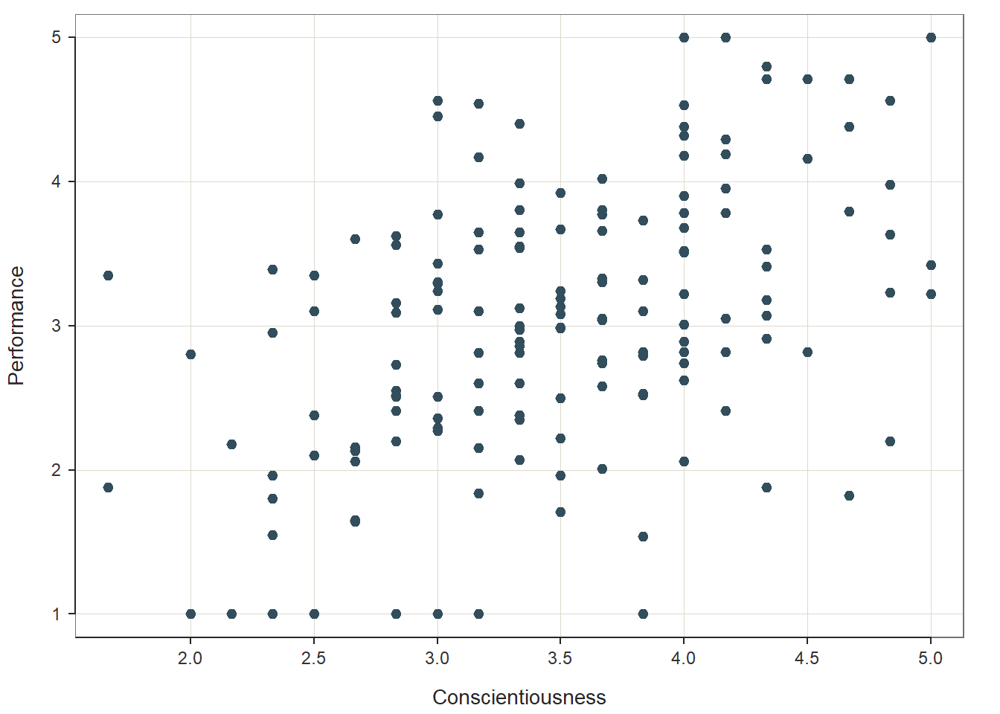
As you can see, a very simple (and not super aesthetically pleasing) bar chart appears in our Plots window. When exploring data on our own, it is often fine to just complete a simple bar chart like this one, as opposed to fine-tuning the aesthetics (e.g., size, color, font) of the plot. If you want, you can export this plot as a PDF or PNG image file, or you can copy it and paste it in another document. To do so, just click on the Export button in the Plots window, which should appear in the lower right of your RStudio interface.
If you’re feeling adventurous and would like to learn how to fine-tune the bar chart, feel free to continue on with this tutorial. Additional attention paid to aesthetics might be worthwhile if you plan to present the plot to others in a formal presentation or report.
Using the barplot code we wrote above, we can add a second argument in which we apply ylim= followed by a vector (using the c function) of the lower and upper limits for the y-axis. In this example, I set the lower and upper y-axis limits to 0 and 20.
# Create a bar chart based on Facility counts
barplot(table(demo$Facility),
ylim=c(0,20))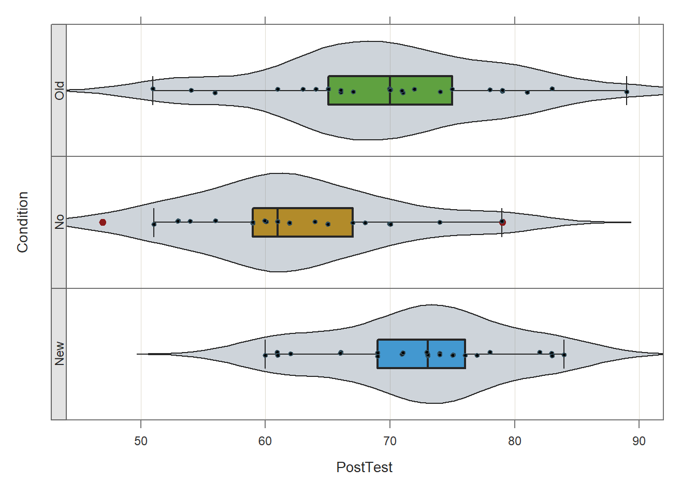
Building on the previous code, we add additional arguments in which we provide more meaningful labels for the x- and y-axes. To do so, we use the xlab argument for the x-axis label and the ylab argument for the y-axis label. Just make sure to put quotation marks (" ") around whatever text you come up with for your axis labels.
# Create a bar chart based on Facility counts
barplot(table(demo$Facility),
ylim=c(0,20),
xlab="Facility",
ylab="Counts")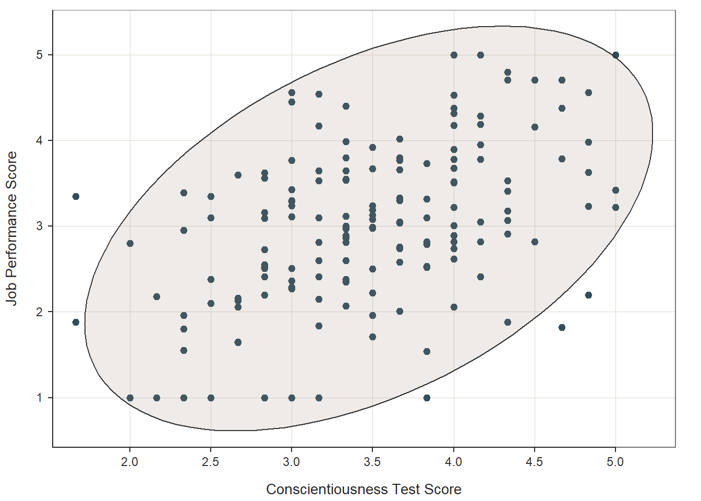
We can change the colors of the bars by adding the col (color) argument. There are many, many different colors that can be used in R, and one of my favorites is “dodgerblue”.
# Create a bar chart based on Facility counts
barplot(table(demo$Facility),
ylim=c(0,20),
xlab="Facility",
ylab="Counts",
col="dodgerblue")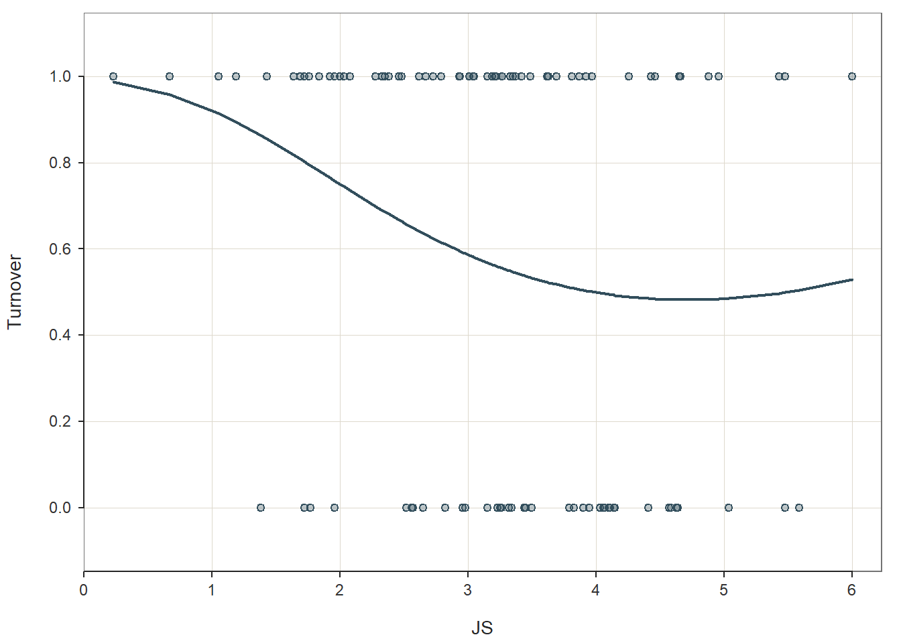
If you’d like to explore additional colors, check out this website: https://www.r-graph-gallery.com/colors.html. Or, you can run the colors() function (without any arguments), and you’ll get a (huge) list of the color options.
# List names of base R color choices
colors()## [1] "white" "aliceblue" "antiquewhite" "antiquewhite1"
## [5] "antiquewhite2" "antiquewhite3" "antiquewhite4" "aquamarine"
## [9] "aquamarine1" "aquamarine2" "aquamarine3" "aquamarine4"
## [13] "azure" "azure1" "azure2" "azure3"
## [17] "azure4" "beige" "bisque" "bisque1"
## [21] "bisque2" "bisque3" "bisque4" "black"
## [25] "blanchedalmond" "blue" "blue1" "blue2"
## [29] "blue3" "blue4" "blueviolet" "brown"
## [33] "brown1" "brown2" "brown3" "brown4"
## [37] "burlywood" "burlywood1" "burlywood2" "burlywood3"
## [41] "burlywood4" "cadetblue" "cadetblue1" "cadetblue2"
## [45] "cadetblue3" "cadetblue4" "chartreuse" "chartreuse1"
## [49] "chartreuse2" "chartreuse3" "chartreuse4" "chocolate"
## [53] "chocolate1" "chocolate2" "chocolate3" "chocolate4"
## [57] "coral" "coral1" "coral2" "coral3"
## [61] "coral4" "cornflowerblue" "cornsilk" "cornsilk1"
## [65] "cornsilk2" "cornsilk3" "cornsilk4" "cyan"
## [69] "cyan1" "cyan2" "cyan3" "cyan4"
## [73] "darkblue" "darkcyan" "darkgoldenrod" "darkgoldenrod1"
## [77] "darkgoldenrod2" "darkgoldenrod3" "darkgoldenrod4" "darkgray"
## [81] "darkgreen" "darkgrey" "darkkhaki" "darkmagenta"
## [85] "darkolivegreen" "darkolivegreen1" "darkolivegreen2" "darkolivegreen3"
## [89] "darkolivegreen4" "darkorange" "darkorange1" "darkorange2"
## [93] "darkorange3" "darkorange4" "darkorchid" "darkorchid1"
## [97] "darkorchid2" "darkorchid3" "darkorchid4" "darkred"
## [101] "darksalmon" "darkseagreen" "darkseagreen1" "darkseagreen2"
## [105] "darkseagreen3" "darkseagreen4" "darkslateblue" "darkslategray"
## [109] "darkslategray1" "darkslategray2" "darkslategray3" "darkslategray4"
## [113] "darkslategrey" "darkturquoise" "darkviolet" "deeppink"
## [117] "deeppink1" "deeppink2" "deeppink3" "deeppink4"
## [121] "deepskyblue" "deepskyblue1" "deepskyblue2" "deepskyblue3"
## [125] "deepskyblue4" "dimgray" "dimgrey" "dodgerblue"
## [129] "dodgerblue1" "dodgerblue2" "dodgerblue3" "dodgerblue4"
## [133] "firebrick" "firebrick1" "firebrick2" "firebrick3"
## [137] "firebrick4" "floralwhite" "forestgreen" "gainsboro"
## [141] "ghostwhite" "gold" "gold1" "gold2"
## [145] "gold3" "gold4" "goldenrod" "goldenrod1"
## [149] "goldenrod2" "goldenrod3" "goldenrod4" "gray"
## [153] "gray0" "gray1" "gray2" "gray3"
## [157] "gray4" "gray5" "gray6" "gray7"
## [161] "gray8" "gray9" "gray10" "gray11"
## [165] "gray12" "gray13" "gray14" "gray15"
## [169] "gray16" "gray17" "gray18" "gray19"
## [173] "gray20" "gray21" "gray22" "gray23"
## [177] "gray24" "gray25" "gray26" "gray27"
## [181] "gray28" "gray29" "gray30" "gray31"
## [185] "gray32" "gray33" "gray34" "gray35"
## [189] "gray36" "gray37" "gray38" "gray39"
## [193] "gray40" "gray41" "gray42" "gray43"
## [197] "gray44" "gray45" "gray46" "gray47"
## [201] "gray48" "gray49" "gray50" "gray51"
## [205] "gray52" "gray53" "gray54" "gray55"
## [209] "gray56" "gray57" "gray58" "gray59"
## [213] "gray60" "gray61" "gray62" "gray63"
## [217] "gray64" "gray65" "gray66" "gray67"
## [221] "gray68" "gray69" "gray70" "gray71"
## [225] "gray72" "gray73" "gray74" "gray75"
## [229] "gray76" "gray77" "gray78" "gray79"
## [233] "gray80" "gray81" "gray82" "gray83"
## [237] "gray84" "gray85" "gray86" "gray87"
## [241] "gray88" "gray89" "gray90" "gray91"
## [245] "gray92" "gray93" "gray94" "gray95"
## [249] "gray96" "gray97" "gray98" "gray99"
## [253] "gray100" "green" "green1" "green2"
## [257] "green3" "green4" "greenyellow" "grey"
## [261] "grey0" "grey1" "grey2" "grey3"
## [265] "grey4" "grey5" "grey6" "grey7"
## [269] "grey8" "grey9" "grey10" "grey11"
## [273] "grey12" "grey13" "grey14" "grey15"
## [277] "grey16" "grey17" "grey18" "grey19"
## [281] "grey20" "grey21" "grey22" "grey23"
## [285] "grey24" "grey25" "grey26" "grey27"
## [289] "grey28" "grey29" "grey30" "grey31"
## [293] "grey32" "grey33" "grey34" "grey35"
## [297] "grey36" "grey37" "grey38" "grey39"
## [301] "grey40" "grey41" "grey42" "grey43"
## [305] "grey44" "grey45" "grey46" "grey47"
## [309] "grey48" "grey49" "grey50" "grey51"
## [313] "grey52" "grey53" "grey54" "grey55"
## [317] "grey56" "grey57" "grey58" "grey59"
## [321] "grey60" "grey61" "grey62" "grey63"
## [325] "grey64" "grey65" "grey66" "grey67"
## [329] "grey68" "grey69" "grey70" "grey71"
## [333] "grey72" "grey73" "grey74" "grey75"
## [337] "grey76" "grey77" "grey78" "grey79"
## [341] "grey80" "grey81" "grey82" "grey83"
## [345] "grey84" "grey85" "grey86" "grey87"
## [349] "grey88" "grey89" "grey90" "grey91"
## [353] "grey92" "grey93" "grey94" "grey95"
## [357] "grey96" "grey97" "grey98" "grey99"
## [361] "grey100" "honeydew" "honeydew1" "honeydew2"
## [365] "honeydew3" "honeydew4" "hotpink" "hotpink1"
## [369] "hotpink2" "hotpink3" "hotpink4" "indianred"
## [373] "indianred1" "indianred2" "indianred3" "indianred4"
## [377] "ivory" "ivory1" "ivory2" "ivory3"
## [381] "ivory4" "khaki" "khaki1" "khaki2"
## [385] "khaki3" "khaki4" "lavender" "lavenderblush"
## [389] "lavenderblush1" "lavenderblush2" "lavenderblush3" "lavenderblush4"
## [393] "lawngreen" "lemonchiffon" "lemonchiffon1" "lemonchiffon2"
## [397] "lemonchiffon3" "lemonchiffon4" "lightblue" "lightblue1"
## [401] "lightblue2" "lightblue3" "lightblue4" "lightcoral"
## [405] "lightcyan" "lightcyan1" "lightcyan2" "lightcyan3"
## [409] "lightcyan4" "lightgoldenrod" "lightgoldenrod1" "lightgoldenrod2"
## [413] "lightgoldenrod3" "lightgoldenrod4" "lightgoldenrodyellow" "lightgray"
## [417] "lightgreen" "lightgrey" "lightpink" "lightpink1"
## [421] "lightpink2" "lightpink3" "lightpink4" "lightsalmon"
## [425] "lightsalmon1" "lightsalmon2" "lightsalmon3" "lightsalmon4"
## [429] "lightseagreen" "lightskyblue" "lightskyblue1" "lightskyblue2"
## [433] "lightskyblue3" "lightskyblue4" "lightslateblue" "lightslategray"
## [437] "lightslategrey" "lightsteelblue" "lightsteelblue1" "lightsteelblue2"
## [441] "lightsteelblue3" "lightsteelblue4" "lightyellow" "lightyellow1"
## [445] "lightyellow2" "lightyellow3" "lightyellow4" "limegreen"
## [449] "linen" "magenta" "magenta1" "magenta2"
## [453] "magenta3" "magenta4" "maroon" "maroon1"
## [457] "maroon2" "maroon3" "maroon4" "mediumaquamarine"
## [461] "mediumblue" "mediumorchid" "mediumorchid1" "mediumorchid2"
## [465] "mediumorchid3" "mediumorchid4" "mediumpurple" "mediumpurple1"
## [469] "mediumpurple2" "mediumpurple3" "mediumpurple4" "mediumseagreen"
## [473] "mediumslateblue" "mediumspringgreen" "mediumturquoise" "mediumvioletred"
## [477] "midnightblue" "mintcream" "mistyrose" "mistyrose1"
## [481] "mistyrose2" "mistyrose3" "mistyrose4" "moccasin"
## [485] "navajowhite" "navajowhite1" "navajowhite2" "navajowhite3"
## [489] "navajowhite4" "navy" "navyblue" "oldlace"
## [493] "olivedrab" "olivedrab1" "olivedrab2" "olivedrab3"
## [497] "olivedrab4" "orange" "orange1" "orange2"
## [501] "orange3" "orange4" "orangered" "orangered1"
## [505] "orangered2" "orangered3" "orangered4" "orchid"
## [509] "orchid1" "orchid2" "orchid3" "orchid4"
## [513] "palegoldenrod" "palegreen" "palegreen1" "palegreen2"
## [517] "palegreen3" "palegreen4" "paleturquoise" "paleturquoise1"
## [521] "paleturquoise2" "paleturquoise3" "paleturquoise4" "palevioletred"
## [525] "palevioletred1" "palevioletred2" "palevioletred3" "palevioletred4"
## [529] "papayawhip" "peachpuff" "peachpuff1" "peachpuff2"
## [533] "peachpuff3" "peachpuff4" "peru" "pink"
## [537] "pink1" "pink2" "pink3" "pink4"
## [541] "plum" "plum1" "plum2" "plum3"
## [545] "plum4" "powderblue" "purple" "purple1"
## [549] "purple2" "purple3" "purple4" "red"
## [553] "red1" "red2" "red3" "red4"
## [557] "rosybrown" "rosybrown1" "rosybrown2" "rosybrown3"
## [561] "rosybrown4" "royalblue" "royalblue1" "royalblue2"
## [565] "royalblue3" "royalblue4" "saddlebrown" "salmon"
## [569] "salmon1" "salmon2" "salmon3" "salmon4"
## [573] "sandybrown" "seagreen" "seagreen1" "seagreen2"
## [577] "seagreen3" "seagreen4" "seashell" "seashell1"
## [581] "seashell2" "seashell3" "seashell4" "sienna"
## [585] "sienna1" "sienna2" "sienna3" "sienna4"
## [589] "skyblue" "skyblue1" "skyblue2" "skyblue3"
## [593] "skyblue4" "slateblue" "slateblue1" "slateblue2"
## [597] "slateblue3" "slateblue4" "slategray" "slategray1"
## [601] "slategray2" "slategray3" "slategray4" "slategrey"
## [605] "snow" "snow1" "snow2" "snow3"
## [609] "snow4" "springgreen" "springgreen1" "springgreen2"
## [613] "springgreen3" "springgreen4" "steelblue" "steelblue1"
## [617] "steelblue2" "steelblue3" "steelblue4" "tan"
## [621] "tan1" "tan2" "tan3" "tan4"
## [625] "thistle" "thistle1" "thistle2" "thistle3"
## [629] "thistle4" "tomato" "tomato1" "tomato2"
## [633] "tomato3" "tomato4" "turquoise" "turquoise1"
## [637] "turquoise2" "turquoise3" "turquoise4" "violet"
## [641] "violetred" "violetred1" "violetred2" "violetred3"
## [645] "violetred4" "wheat" "wheat1" "wheat2"
## [649] "wheat3" "wheat4" "whitesmoke" "yellow"
## [653] "yellow1" "yellow2" "yellow3" "yellow4"
## [657] "yellowgreen"Finally, the barplot function does not provide a horizontal line where the y-axis is equal to 0. If you’d like to add such a line, simply follow up your barplot function with the abline function, and as the sole argument, type h=0.
# Create a bar chart based on Facility counts
barplot(table(demo$Facility),
ylim=c(0,20),
xlab="Facility",
ylab="Counts",
col="dodgerblue")
abline(h=0)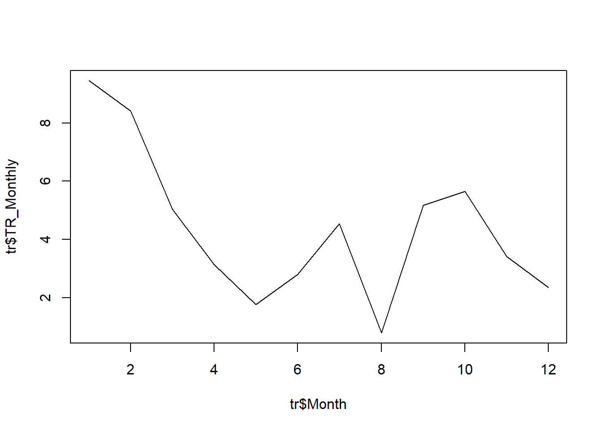
And finally, here’s a quick example of how you might visualize the Education variable using the barplot function.
# Create a bar chart for Education variable
barplot(table(demo$Education),
ylim=c(0,20),
xlab="Education Level",
ylab="Counts",
col="orange")
abline(h=0)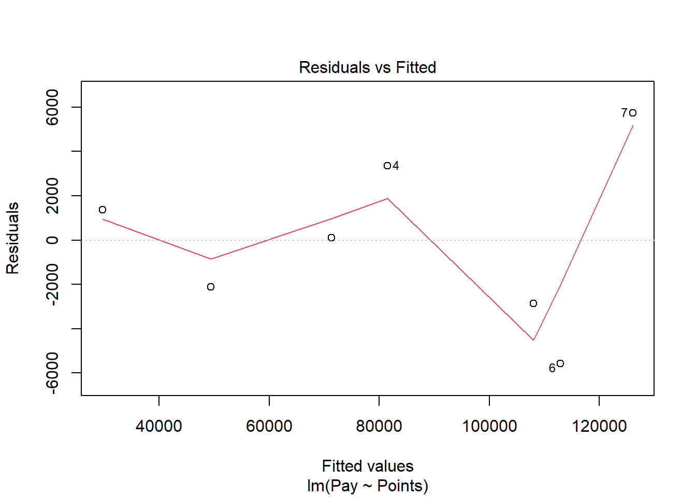
21.2.2.2 Create Pie Charts
Using the pie function from base R, we can create a very simple and straightforward bar chart without too many frills and embellishments. Let’s start with the Education variable. As the sole parenthetical argument in the barplot function, simply, enter the table(demo$Education) code that we wrote in the section called Compute Counts & Frequencies.
# Create a bar chart based on Education counts
pie(table(demo$Education))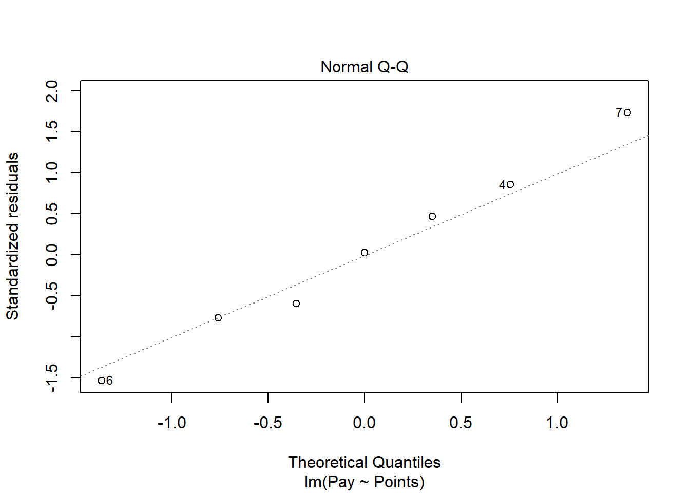
A very simple and generic pie chart appears in our Plots window. When exploring data on our own, it is often fine to just complete a simple pie chart like this one, as opposed to fine-tuning the aesthetics (e.g., size, color, font) of the plot. If you want, you can export this plot as a PDF or PNG image file, or you can copy it and paste it in another document. To do so, just click on the Export button in the Plots window, which should appear in the lower right of your RStudio interface.
If you’re feeling adventurous and would like to learn how to adjust the colors pie chart, feel free to continue on with this tutorial.
Using the pie code we wrote above, let’s add the col= argument followed by the c (combine) function containing a vector of colors – one color for each slice of the pie. Here, I chose the primar colors of red, yellow, and blue.
# Create a bar chart based on Education counts
pie(table(demo$Education),
col=c("red", "yellow", "blue"))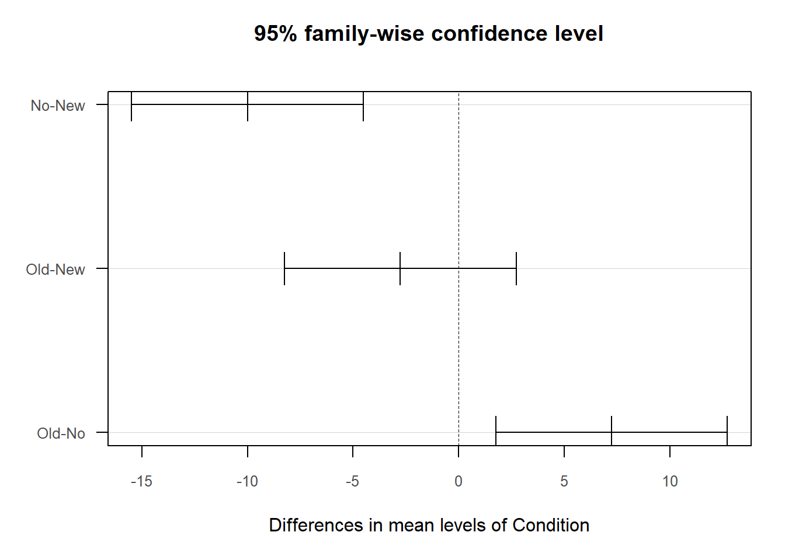
If you’d like to explore additional colors, check out this website: https://www.r-graph-gallery.com/colors.html. Or, you can run the colors() function (without any arguments), and you’ll get a (huge) list of the color options.
# List names of base R color choices
colors()## [1] "white" "aliceblue" "antiquewhite" "antiquewhite1"
## [5] "antiquewhite2" "antiquewhite3" "antiquewhite4" "aquamarine"
## [9] "aquamarine1" "aquamarine2" "aquamarine3" "aquamarine4"
## [13] "azure" "azure1" "azure2" "azure3"
## [17] "azure4" "beige" "bisque" "bisque1"
## [21] "bisque2" "bisque3" "bisque4" "black"
## [25] "blanchedalmond" "blue" "blue1" "blue2"
## [29] "blue3" "blue4" "blueviolet" "brown"
## [33] "brown1" "brown2" "brown3" "brown4"
## [37] "burlywood" "burlywood1" "burlywood2" "burlywood3"
## [41] "burlywood4" "cadetblue" "cadetblue1" "cadetblue2"
## [45] "cadetblue3" "cadetblue4" "chartreuse" "chartreuse1"
## [49] "chartreuse2" "chartreuse3" "chartreuse4" "chocolate"
## [53] "chocolate1" "chocolate2" "chocolate3" "chocolate4"
## [57] "coral" "coral1" "coral2" "coral3"
## [61] "coral4" "cornflowerblue" "cornsilk" "cornsilk1"
## [65] "cornsilk2" "cornsilk3" "cornsilk4" "cyan"
## [69] "cyan1" "cyan2" "cyan3" "cyan4"
## [73] "darkblue" "darkcyan" "darkgoldenrod" "darkgoldenrod1"
## [77] "darkgoldenrod2" "darkgoldenrod3" "darkgoldenrod4" "darkgray"
## [81] "darkgreen" "darkgrey" "darkkhaki" "darkmagenta"
## [85] "darkolivegreen" "darkolivegreen1" "darkolivegreen2" "darkolivegreen3"
## [89] "darkolivegreen4" "darkorange" "darkorange1" "darkorange2"
## [93] "darkorange3" "darkorange4" "darkorchid" "darkorchid1"
## [97] "darkorchid2" "darkorchid3" "darkorchid4" "darkred"
## [101] "darksalmon" "darkseagreen" "darkseagreen1" "darkseagreen2"
## [105] "darkseagreen3" "darkseagreen4" "darkslateblue" "darkslategray"
## [109] "darkslategray1" "darkslategray2" "darkslategray3" "darkslategray4"
## [113] "darkslategrey" "darkturquoise" "darkviolet" "deeppink"
## [117] "deeppink1" "deeppink2" "deeppink3" "deeppink4"
## [121] "deepskyblue" "deepskyblue1" "deepskyblue2" "deepskyblue3"
## [125] "deepskyblue4" "dimgray" "dimgrey" "dodgerblue"
## [129] "dodgerblue1" "dodgerblue2" "dodgerblue3" "dodgerblue4"
## [133] "firebrick" "firebrick1" "firebrick2" "firebrick3"
## [137] "firebrick4" "floralwhite" "forestgreen" "gainsboro"
## [141] "ghostwhite" "gold" "gold1" "gold2"
## [145] "gold3" "gold4" "goldenrod" "goldenrod1"
## [149] "goldenrod2" "goldenrod3" "goldenrod4" "gray"
## [153] "gray0" "gray1" "gray2" "gray3"
## [157] "gray4" "gray5" "gray6" "gray7"
## [161] "gray8" "gray9" "gray10" "gray11"
## [165] "gray12" "gray13" "gray14" "gray15"
## [169] "gray16" "gray17" "gray18" "gray19"
## [173] "gray20" "gray21" "gray22" "gray23"
## [177] "gray24" "gray25" "gray26" "gray27"
## [181] "gray28" "gray29" "gray30" "gray31"
## [185] "gray32" "gray33" "gray34" "gray35"
## [189] "gray36" "gray37" "gray38" "gray39"
## [193] "gray40" "gray41" "gray42" "gray43"
## [197] "gray44" "gray45" "gray46" "gray47"
## [201] "gray48" "gray49" "gray50" "gray51"
## [205] "gray52" "gray53" "gray54" "gray55"
## [209] "gray56" "gray57" "gray58" "gray59"
## [213] "gray60" "gray61" "gray62" "gray63"
## [217] "gray64" "gray65" "gray66" "gray67"
## [221] "gray68" "gray69" "gray70" "gray71"
## [225] "gray72" "gray73" "gray74" "gray75"
## [229] "gray76" "gray77" "gray78" "gray79"
## [233] "gray80" "gray81" "gray82" "gray83"
## [237] "gray84" "gray85" "gray86" "gray87"
## [241] "gray88" "gray89" "gray90" "gray91"
## [245] "gray92" "gray93" "gray94" "gray95"
## [249] "gray96" "gray97" "gray98" "gray99"
## [253] "gray100" "green" "green1" "green2"
## [257] "green3" "green4" "greenyellow" "grey"
## [261] "grey0" "grey1" "grey2" "grey3"
## [265] "grey4" "grey5" "grey6" "grey7"
## [269] "grey8" "grey9" "grey10" "grey11"
## [273] "grey12" "grey13" "grey14" "grey15"
## [277] "grey16" "grey17" "grey18" "grey19"
## [281] "grey20" "grey21" "grey22" "grey23"
## [285] "grey24" "grey25" "grey26" "grey27"
## [289] "grey28" "grey29" "grey30" "grey31"
## [293] "grey32" "grey33" "grey34" "grey35"
## [297] "grey36" "grey37" "grey38" "grey39"
## [301] "grey40" "grey41" "grey42" "grey43"
## [305] "grey44" "grey45" "grey46" "grey47"
## [309] "grey48" "grey49" "grey50" "grey51"
## [313] "grey52" "grey53" "grey54" "grey55"
## [317] "grey56" "grey57" "grey58" "grey59"
## [321] "grey60" "grey61" "grey62" "grey63"
## [325] "grey64" "grey65" "grey66" "grey67"
## [329] "grey68" "grey69" "grey70" "grey71"
## [333] "grey72" "grey73" "grey74" "grey75"
## [337] "grey76" "grey77" "grey78" "grey79"
## [341] "grey80" "grey81" "grey82" "grey83"
## [345] "grey84" "grey85" "grey86" "grey87"
## [349] "grey88" "grey89" "grey90" "grey91"
## [353] "grey92" "grey93" "grey94" "grey95"
## [357] "grey96" "grey97" "grey98" "grey99"
## [361] "grey100" "honeydew" "honeydew1" "honeydew2"
## [365] "honeydew3" "honeydew4" "hotpink" "hotpink1"
## [369] "hotpink2" "hotpink3" "hotpink4" "indianred"
## [373] "indianred1" "indianred2" "indianred3" "indianred4"
## [377] "ivory" "ivory1" "ivory2" "ivory3"
## [381] "ivory4" "khaki" "khaki1" "khaki2"
## [385] "khaki3" "khaki4" "lavender" "lavenderblush"
## [389] "lavenderblush1" "lavenderblush2" "lavenderblush3" "lavenderblush4"
## [393] "lawngreen" "lemonchiffon" "lemonchiffon1" "lemonchiffon2"
## [397] "lemonchiffon3" "lemonchiffon4" "lightblue" "lightblue1"
## [401] "lightblue2" "lightblue3" "lightblue4" "lightcoral"
## [405] "lightcyan" "lightcyan1" "lightcyan2" "lightcyan3"
## [409] "lightcyan4" "lightgoldenrod" "lightgoldenrod1" "lightgoldenrod2"
## [413] "lightgoldenrod3" "lightgoldenrod4" "lightgoldenrodyellow" "lightgray"
## [417] "lightgreen" "lightgrey" "lightpink" "lightpink1"
## [421] "lightpink2" "lightpink3" "lightpink4" "lightsalmon"
## [425] "lightsalmon1" "lightsalmon2" "lightsalmon3" "lightsalmon4"
## [429] "lightseagreen" "lightskyblue" "lightskyblue1" "lightskyblue2"
## [433] "lightskyblue3" "lightskyblue4" "lightslateblue" "lightslategray"
## [437] "lightslategrey" "lightsteelblue" "lightsteelblue1" "lightsteelblue2"
## [441] "lightsteelblue3" "lightsteelblue4" "lightyellow" "lightyellow1"
## [445] "lightyellow2" "lightyellow3" "lightyellow4" "limegreen"
## [449] "linen" "magenta" "magenta1" "magenta2"
## [453] "magenta3" "magenta4" "maroon" "maroon1"
## [457] "maroon2" "maroon3" "maroon4" "mediumaquamarine"
## [461] "mediumblue" "mediumorchid" "mediumorchid1" "mediumorchid2"
## [465] "mediumorchid3" "mediumorchid4" "mediumpurple" "mediumpurple1"
## [469] "mediumpurple2" "mediumpurple3" "mediumpurple4" "mediumseagreen"
## [473] "mediumslateblue" "mediumspringgreen" "mediumturquoise" "mediumvioletred"
## [477] "midnightblue" "mintcream" "mistyrose" "mistyrose1"
## [481] "mistyrose2" "mistyrose3" "mistyrose4" "moccasin"
## [485] "navajowhite" "navajowhite1" "navajowhite2" "navajowhite3"
## [489] "navajowhite4" "navy" "navyblue" "oldlace"
## [493] "olivedrab" "olivedrab1" "olivedrab2" "olivedrab3"
## [497] "olivedrab4" "orange" "orange1" "orange2"
## [501] "orange3" "orange4" "orangered" "orangered1"
## [505] "orangered2" "orangered3" "orangered4" "orchid"
## [509] "orchid1" "orchid2" "orchid3" "orchid4"
## [513] "palegoldenrod" "palegreen" "palegreen1" "palegreen2"
## [517] "palegreen3" "palegreen4" "paleturquoise" "paleturquoise1"
## [521] "paleturquoise2" "paleturquoise3" "paleturquoise4" "palevioletred"
## [525] "palevioletred1" "palevioletred2" "palevioletred3" "palevioletred4"
## [529] "papayawhip" "peachpuff" "peachpuff1" "peachpuff2"
## [533] "peachpuff3" "peachpuff4" "peru" "pink"
## [537] "pink1" "pink2" "pink3" "pink4"
## [541] "plum" "plum1" "plum2" "plum3"
## [545] "plum4" "powderblue" "purple" "purple1"
## [549] "purple2" "purple3" "purple4" "red"
## [553] "red1" "red2" "red3" "red4"
## [557] "rosybrown" "rosybrown1" "rosybrown2" "rosybrown3"
## [561] "rosybrown4" "royalblue" "royalblue1" "royalblue2"
## [565] "royalblue3" "royalblue4" "saddlebrown" "salmon"
## [569] "salmon1" "salmon2" "salmon3" "salmon4"
## [573] "sandybrown" "seagreen" "seagreen1" "seagreen2"
## [577] "seagreen3" "seagreen4" "seashell" "seashell1"
## [581] "seashell2" "seashell3" "seashell4" "sienna"
## [585] "sienna1" "sienna2" "sienna3" "sienna4"
## [589] "skyblue" "skyblue1" "skyblue2" "skyblue3"
## [593] "skyblue4" "slateblue" "slateblue1" "slateblue2"
## [597] "slateblue3" "slateblue4" "slategray" "slategray1"
## [601] "slategray2" "slategray3" "slategray4" "slategrey"
## [605] "snow" "snow1" "snow2" "snow3"
## [609] "snow4" "springgreen" "springgreen1" "springgreen2"
## [613] "springgreen3" "springgreen4" "steelblue" "steelblue1"
## [617] "steelblue2" "steelblue3" "steelblue4" "tan"
## [621] "tan1" "tan2" "tan3" "tan4"
## [625] "thistle" "thistle1" "thistle2" "thistle3"
## [629] "thistle4" "tomato" "tomato1" "tomato2"
## [633] "tomato3" "tomato4" "turquoise" "turquoise1"
## [637] "turquoise2" "turquoise3" "turquoise4" "violet"
## [641] "violetred" "violetred1" "violetred2" "violetred3"
## [645] "violetred4" "wheat" "wheat1" "wheat2"
## [649] "wheat3" "wheat4" "whitesmoke" "yellow"
## [653] "yellow1" "yellow2" "yellow3" "yellow4"
## [657] "yellowgreen"21.3 Describe Interval & Ratio (Continuous) Variables
We can describe variables with interval or ratio measurement scales (i.e., continuous variables) by computing measures of central tendency (e.g., mean, median) and dispersion (e.g., standard deviation, range); however, it’s often good practice to begin by creating data visualizations (e.g., histograms, box plots) that will enable us to understand the nature of each variable’s distribution.
21.3.1 Create Data Visualizations
By visualizing the shape of a continuous variable’s distribution (e.g., normal distribution, positive skew, negative skew), we can make a more informed decision regarding how to select, interpret, and report measures of central tendency and dispersion. In this section, we’ll focus on creating histograms and box plots.
21.3.1.1 Create Histograms
A histogram visually approximates the distribution of a set of numerical scores. The scores are grouped into ranges (which by default are often equally sized), and the boundaries of these ranges are referred to as breaks or break points. The bars in a histogram fill these ranges, and their heights represent the frequency (i.e., count) of sources within each range.
Let’s begin with the Age variable. To create a histogram, we can use the hist function from base R. To get things started, let’s enter a single argument: the name of the data frame object (demo), followed by the $ operator and the name of the variable we wish to visualize (Age).
# Create a histogram
hist(demo$Age)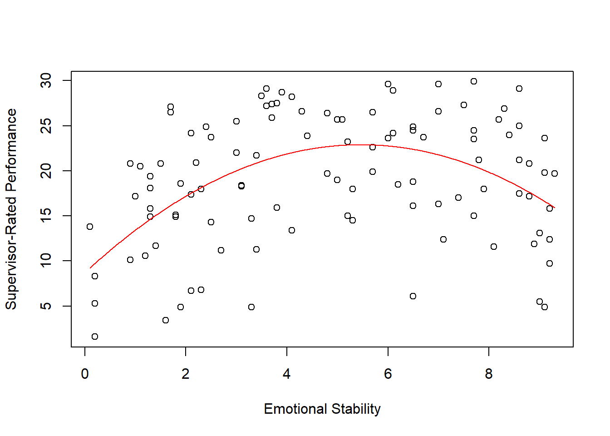
This histogram will do just fine for our purposes. Note that the histogram indicates that the scores from the Age variable appear to be roughly normally distributed. With smaller sample sizes (e.g., fewer than 30 observations or cases), we’re less likely to see a clean, normal distribution of scores, and this relates to the central limit theorem; though, an explanation of this theorem is beyond the scope of this tutorial. Nevertheless, the take-home message is that histograms provide rough approximations of the shapes of distributions, and a normal distribution is less likely when their are fewer observations (i.e., a smaller sample) and thus fewer scores on a variable.
For your own internal data-exploration purposes, it is often fine to create a simple histogram like the one we created above, meaning that you would not need to worry about the aesthetics (e.g., size, color) of the histogram. If you want, you can export this plot as a PDF or PNG image file, or you can copy it and paste it in another document. To do so, just click on the Export button in the Plots window, which should appear in the lower right of your RStudio interface.
As optional next steps, you can play around with arguments to adjust the y-axis limits (ylim), x-axis label (xlab), y-axis label (ylab), main title (main), and the bar color (col). [If you’d like to explore additional colors, check out this website: https://www.r-graph-gallery.com/colors.html. Or, you can run the colors() function (without any arguments), and you’ll get a (huge) list of the color options.] A more in-depth description of these plot arguments is provided in the section above called Create Bar Charts.
# Create a histogram and add style
hist(demo$Age,
ylim=c(0, 15), # y-axis limits
xlab="Employee Age", # x-axis label
ylab="Count", # y-axis label
main=NULL, # main title
col="dodgerblue") # bar color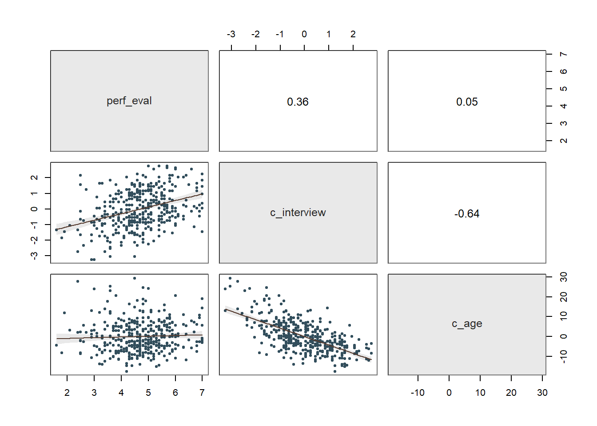
We can also specify a vector of the break points between the bars using the c function from base R. Just be sure that the lowest value in your vector is equal to or less than the minimum value for the variable and the the highest value is equal to or greater than the maximum value for the variable. To do so, we can add the breaks argument.
# Create a histogram and add style
hist(demo$Age,
ylim=c(0, 25), # y-axis limits
xlab="Employee Age", # x-axis label
ylab="Count", # y-axis label
main=NULL, # remove main title
col="dodgerblue", # bar color
breaks=c(20, 25, 30, 35)) # set break points between bars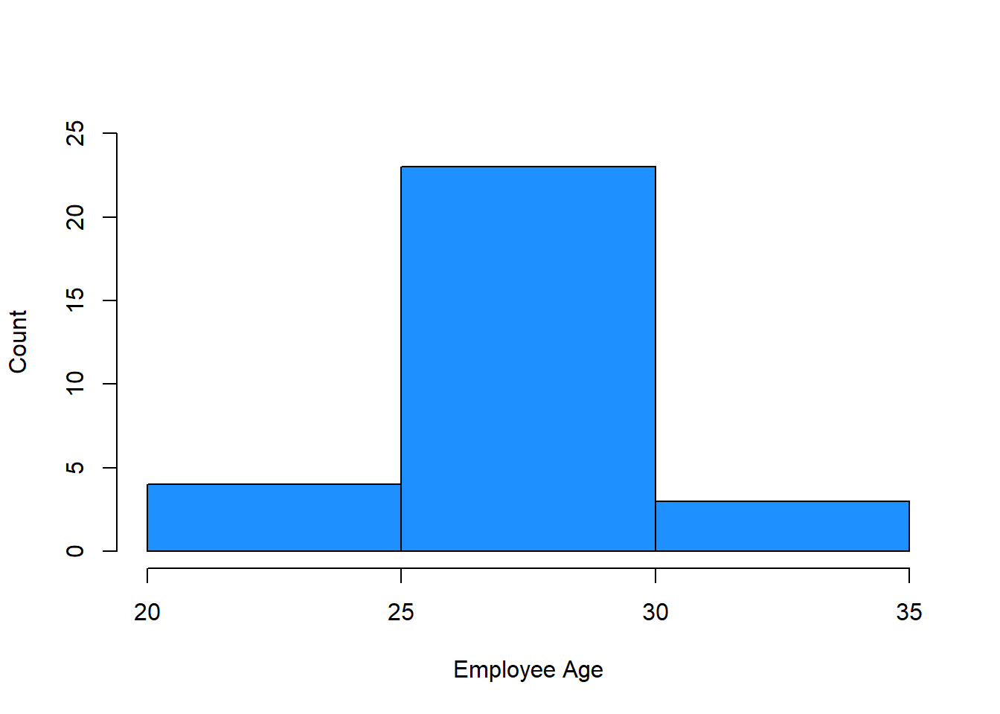
21.3.1.2 Create Box Plots
We could use a histogram to visualize the Performance variable, but let’s use this opportunity to create a box plot instead. Like a histogram, a box plot (sometimes called a “box and whiskers plot”) also reveals information about the shape of a distribution, including the median, 25th percentile (i.e., lower quartile), 75th percentile (i.e., upper quartile), and the variation outside the 25th and 75th percentiles.
We’ll use the boxplot function from base R. To kick things off, let’s enter a single argument: the name of the data frame object (demo), followed by the $ operator and the name of the variable we wish to visualize (Performance).
# Create a box plot
boxplot(demo$Performance)
The thick horizontal line in the middle of the box is the median score, the lower edge of the box represents the lower quartile (i.e., 25th percentile, median of lower half of the distribution), and the upper edge of the box represents the upper quartile (i.e., 75th percentile, median of the upper half of the distribution). The height of the box is the interquartile range. By default, the boxplot function sets the upper “whisker” (i.e., the horizontal line at the top of the upper dashed line) as the smaller of two values: the maximum value or 1.5 times the interquartile range. Further, the function sets the lower “whisker” (i.e., the horizontal line at the bottom of the lower dashed line) as the larger of two values: the minimum value or 1.5 times the interquartile range.
In the box plot for Performance, we can see that the distribution of scores appears to be slightly negatively skewed, as the upper quartile is smaller than the lower quartile (i.e., the median is closer to the top of the box) and the upper whisker is shorter than the lower whisker. If there had been any outlier scores, these would appear beyond the upper and lower limits of the whiskers.
If you plan to create a box plot for your own data-exploration purposes only, it is often fine to create a simple box plot like the one we created above, which means you would not need to proceed forward with subsequent steps in which I show how to refine the aesthetics of the box plot. If you want, you can export this plot as a PDF or PNG image file, or you can copy it and paste it in another document. To do so, just click on the Export button in the Plots window, which should appear in the lower right of your RStudio interface.
As optional next steps, you can play around with arguments to adjust the y-axis label (ylab) and the box color (col). [If you’d like to explore additional colors, check out this website: https://www.r-graph-gallery.com/colors.html. Or, you can run the colors() function (without any arguments), and you’ll get a (huge) list of the color options.]
# Create a box plot and add style
boxplot(demo$Performance,
ylab="Employee Job Performance", # y-axis label
col="orange") # bar color
21.3.2 Compute Measures of Central Tendency & Dispersion
Now that we’ve visualized our interval and ratio measurement scale variables, we’re ready to compute some measures of central tendency and dispersion. In R the process is quite straightforward, as the function names are fairly intuitive: mean (mean), var (variance), sd (standard deviation), median (median), min (minimum), max (maximum), range (range), and IQR (interquartile range). Within each function’s parentheses, you will enter the same arguments. Specifically, you should include the name of the data frame (demo), followed by the $ operator and the name of the variable ofese measures of central tendency even if there are missing data for the varia interest (Age). Keep the na.rm=TRUE argument as is if you would like to calculate the variable of interest.
Let’s start with some measures of central tendency for the Age variable, specifically the mean (mean) and median (median).
# Mean of Age
mean(demo$Age, na.rm=TRUE)## [1] 28# Median of Age
median(demo$Age, na.rm=TRUE)## [1] 28As you can, see both the median and the mode happen to be 28, which indicates that center of the Age distribution is about 28 years. Should we have a skewed distribution (positive or negative), the median is often a better indicator of central tendency given that it is less susceptible to influential cases (e.g., outliers). A class example of a skewed distribution in organizations involves pay variables, especially when executive pay is included. In U.S. organizations, executive pay often is far greater than average worker’s pay, which often leads us to report the median pay as an indicator of central tendency.
Let’s move on to some measures of dispersion, specifically the variance (var) and standard deviation (sd).
# Variance of Age
var(demo$Age, na.rm=TRUE)## [1] 7.103448# Standard deviation (SD) of Age
sd(demo$Age, na.rm=TRUE)## [1] 2.665229The variance is a nonstandardized indicator of dispersion or variation, so we typically interpret the square root of the variance, which is called the standard deviation. Given that we found a mean age of 28 years for this sample of employees, the standard deviation of approximately 2.67 years indicates that approximately 68% of employees’ ages fall within 2.67 years (i.e., 1 SD) of 28 years (i.e., between 25.33 and 30.67 years), and 95% of employees’ ages fall within 5.34 years (i.e., 2 SD) of 28 years (i.e., between 22.66 and 33.34 years). As we saw in the histogram for Age, the variable has a roughly normal distribution.
Let’s compute the minimum and maximum score for Age using the min and max functions, respectively.
# Minimum of Age
min(demo$Age, na.rm=TRUE)## [1] 22# Maximum of Age
max(demo$Age, na.rm=TRUE)## [1] 34The minimum age is 22 years for this sample, and the maximum age is 34 years.
Next let’s compute the range, which will give us the minimum and maximum scores using a single function.
# Range of Age
range(demo$Age, na.rm=TRUE)## [1] 22 34As you can see, the range functions provides both the minimum and maximum scores.
Next, let’s compute the interquartile range (IQR), which is the distance between the lower and upper quartiles (i.e., between the 25th and 75th percentile). As noted above in the section called Create Box Plots, the lower and upper quartiles correspond to the outer edges of the box, whereas the median (50th percentile) corresponds to the line within the box.
# Interquartile range (IQR) of Age
IQR(demo$Age, na.rm=TRUE)## [1] 3The IQR is 3 years, which indicates that middle 50% of ages spans 3 years.
As a follow-up, let’s compute the lower and upper quartiles (i.e., between the 25th and 75th percentiles) by using the quantile function from base R. As the first argument, type the name of the data frame (demo), followed by the $ operator and the name of the variable of interest (Age). As the second argument, type .25 if you would like to request the 25th percentile (lower quartile) and .75 if you would like to request the 75th percentile (upper quartile). Let’s do both.
# Request specific quartiles/percentiles
quantile(demo$Age, .25) # lower quartile / 25th percentile## 25%
## 27quantile(demo$Age, .75) # upper quartile / 75th percentile## 75%
## 30Corroborating what we found with the IQR, the difference between the upper and lower quartiles is 3 years (30 - 27 = 3).
The IQR and lower and upper quartiles are typically reported along with the median (as evidenced by the box plot we created above), so let’s report them together. If you recall, the median age was 28 years for this sample, and the IQR spans 3 years from 27 years to 30 years. These measures indicate that the middle 50% of ages for this sample are between 27 and 30 years, and that the middle-most age (i.e., 50th percentile) is 28 years.
Alternatively, if we wish to automatically compute the 0th, 25th, 50th, 75th, and 100th percentile all at once, we can simply type the name of the quantile function and then enter the name of the data frame object (df) followed by the $ operator and the name of the variable (Age).
# Request 0, 25, 50, 75, and 100 percentiles
quantile(demo$Age)## 0% 25% 50% 75% 100%
## 22 27 28 30 34Finally, one way to compute the minimum, lower quartile (1st quartile), median, mean, upper quartile (3rd quartile), and maximum all at once is to use the summary function from base R with the name of the data frame object (demo) followed by the $ operator and the name of the variable (Age) as the sole parenthetical argument.
# Minimum, lower quartile (1st quartile), median, mean, upper quartile (3rd quartile), and maximum
summary(demo$Age)## Min. 1st Qu. Median Mean 3rd Qu. Max.
## 22 27 28 28 30 3421.4 Summary
In this chapter, we focused on descriptive statistics. First, we began by learning about four different measurements scales (i.e., nominal, ordinal, interval, ratio) and how identifying the measurement scale of a variable is an important first step in determining an appropriate descriptive statistic or data-visualization display type. Second, we learned how to compute counts (i.e., frequencies) for nominal and ordinal variables using the table function from base R. Further, you learned how to convert a variable to an ordered factor using the factor function from base R. Finally, you learned how to visualize counts data using the barplot function from base R. Finally, we learned how to visualize the distribution of a variable with an interval or ratio measurement scale using histograms (hist function from base R) and box plots (boxplot function from base R). In addition, we learned how to compute measures of central tendency and dispersion base R functions like mean (mean), var (variance), sd (standard deviation), median (median), min (minimum), max (maximum), range (range), and IQR (interquartile range).